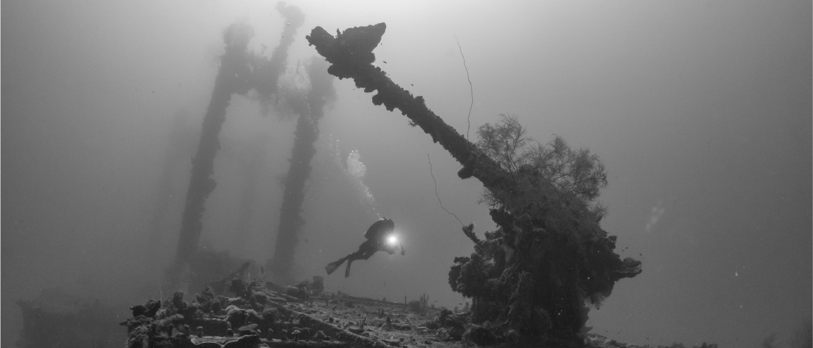

Introduction to Polynomial and Rational Functions

You don't need to dive very deep to feel the effects of pressure. As a person in their neighborhood pool moves eight, ten, twelve feet down, they often feel pain in their ears as a result of water and air pressure differentials. Pressure plays a much greater role at ocean diving depths.
Scuba and free divers are constantly negotiating the effects of pressure in order to experience enjoyable, safe, and productive dives. Gases in a person's respiratory system and diving apparatus interact according to certain physical properties, which upon discovery and evaluation are collectively known as the gas laws. Some are conceptually simple, such as the inverse relationship regarding pressure and volume, and others are more complex. While their formulas seem more straightforward than many you will encounter in this chapter, the gas laws are generally polynomial expressions.